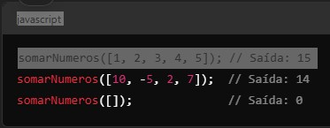

Enunciando:
Crie uma função chamada somarNumeros que recebe um array de números e usa o método reduce()para retornar a soma de todos os números no array.
Requisitos:
- Se o array estiver vazio, a função deve retornar 0.
- Use o método reduce() para resolver o problema.
Dica:
- Lembre-se de fornecer um valor inicial ao reduce(), que nesse caso seria 0 (a soma de um array vazio deve ser 0).
Exemplo de Entrada e Saída:
